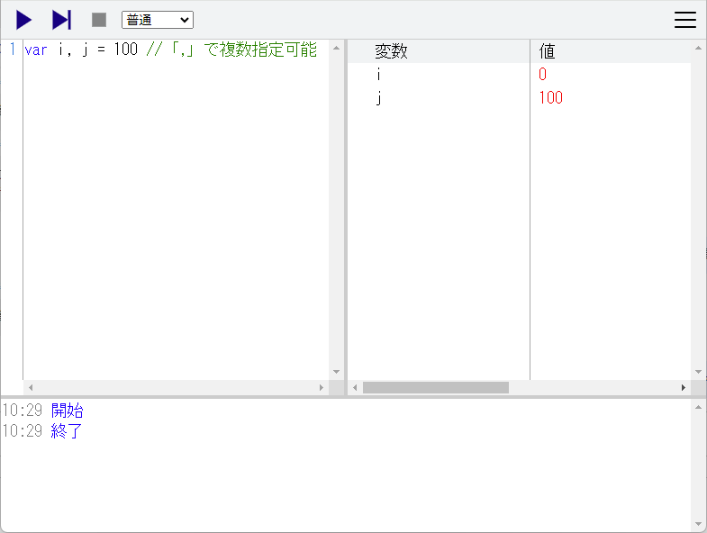
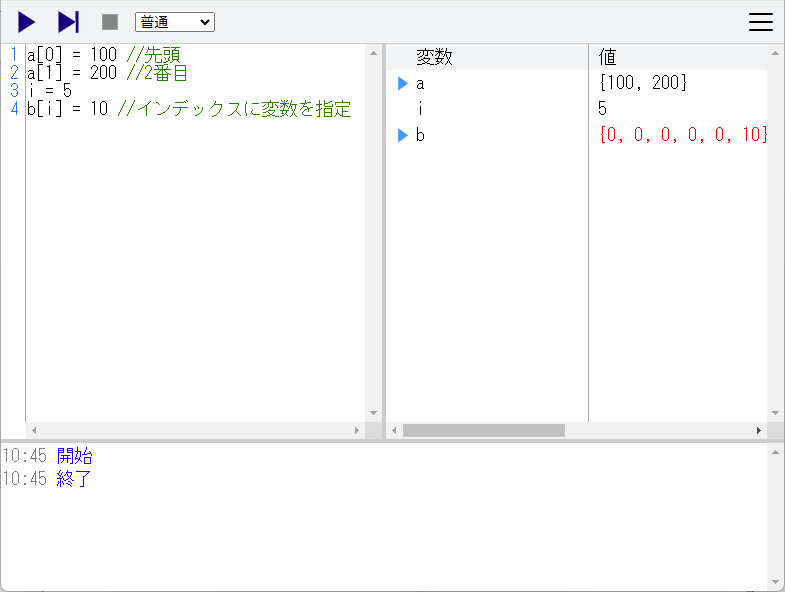
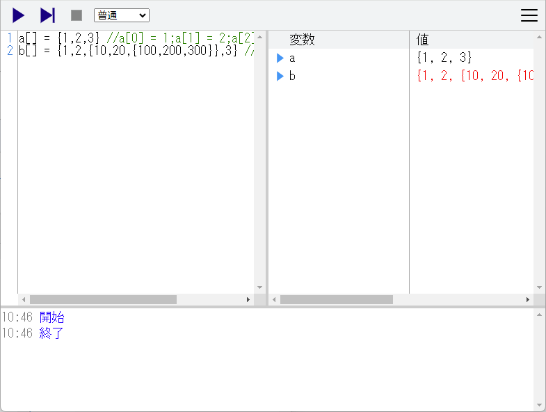
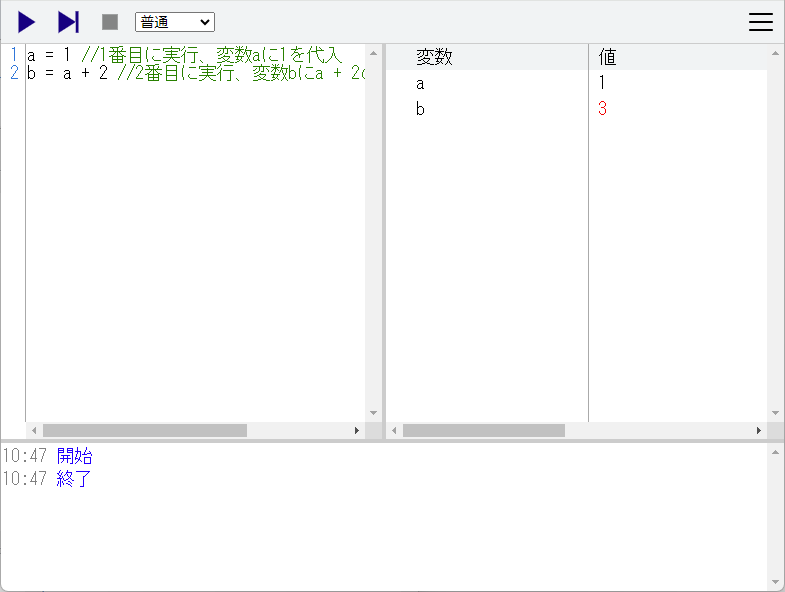
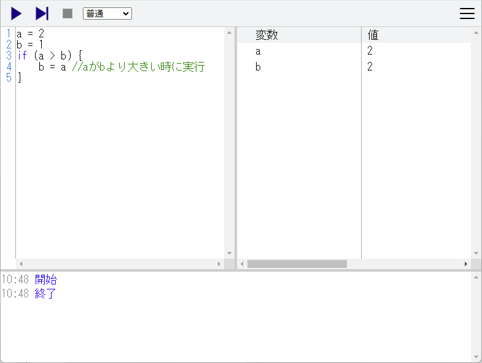
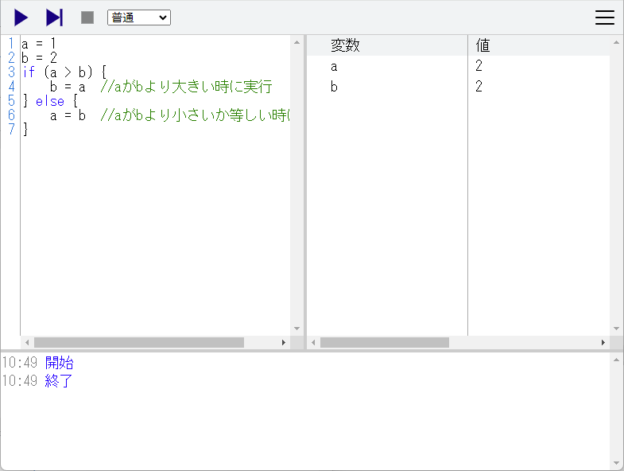
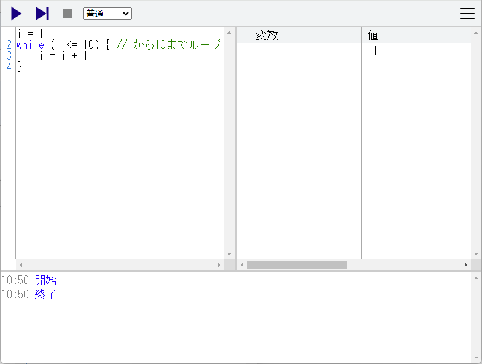
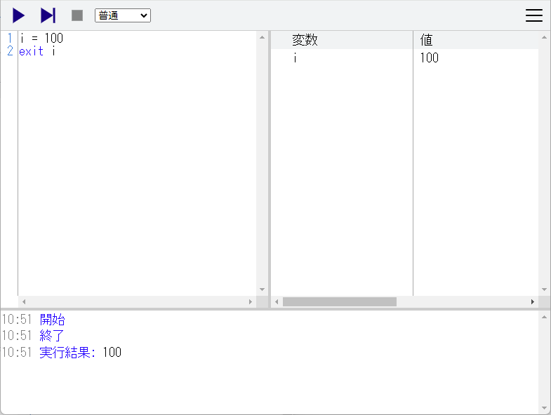

PG0 - チュートリアル
はじめに
プログラミング学習を目的としたプログラミング言語です。
プログラミングに最低限必要となる基本構造(順次、分岐、反復)の理解を目的としています。
そのため非常に割り切った言語仕様となっています。
分岐や反復の方式は一種類ずつとし、扱える型は整数のみとしています。
PG0の使い方
PG0の実行画面
PG0の実行画面(スマホ)
エディタ
プログラムを書く部分となります。
プログラム実行中は実行している行が水色になります。
プログラム実行中は編集することはできません。
変数
プログラム実行中の変数と変数の中の値を表示します。
実行している行により変更された値は赤くなります。
配列の場合は配列の中身を開閉することができます。
コンソール
実行に関する情報（実行、停止、終了）を表示します。
exitで変数を指定した場合はコンソールに実行結果として内容が表示されます。
プログラムにエラーがある場合はコンソールに赤字で表示されます。
実行
エディタに書かれたプログラムを一行ずつ自動実行します。
ステップ実行
エディタに書かれたプログラムをステップ実行します。
再度ステップ実行を選択すると次の行を実行します。
この機能を使うと手動でプログラムを一行ずつ実行することができます。
カーソル行まで実行
エディタのカーソルがある行までプログラムを実行します。
停止
実行中のプログラムを停止します。停止したプログラムの再開はできません。
実行中のプログラムを一時停止したい場合は、ステップ実行を選択してください。
実行速度
プログラムを一行ずつ自動実行するときの速度を選択します。
「待ち無し」を選択するとプログラム終了まで一気に実行します。
変数
変数は数値を代入するための入れ物です。
変数には = を使用して数値、変数、計算結果を入れます。
a = 10
変数は使うときに用意されますが、var を使って変数を明示的に用意することもできます。
var i, j = 100
上記をエディタに入力して実行した結果は以下になります。

配列
配列は変数を連続的に並べた入れ物です。
配列を扱うには変数の後に[]を指定します。
a[0] = 100
a[1] = 200
i = 5
b[i] = 10
上記をエディタに入力して実行した結果は以下になります。

配列の初期化を行うには {値1,値2,値3,...} を代入します。
a[] = {1,2,3}
b[] = {1,2,{10,20,{100,200,300}},3}
上記をエディタに入力して実行した結果は以下になります。

基本構造
順次
一つの文は一行で記述します。
文は上から順番に実行されます。
文では変数や数値の計算や、変数への代入を行います。
| 計算式 | 説明 |
|---|
| c = a + b | a と b の合計を c に代入 |
| c = a - b | a から b を引いた残りを c に代入 |
| c = a * b | a と b の積を c に代入 |
| c = a / b | a と b の商を c に代入 |
| c = a % b | a を b で割った余りを c に代入 |
a = 1
b = a + 2
上記をエディタに入力して実行した結果は以下になります。

ブロックは {～} で括って複数の文をまとめて一つの文として扱う事ができます。
{
a = 1
b = a + 2
}
ブロックの中で用意された変数はブロックを抜ける時に解放されます。
{
var a = 1
}
b = a
解放されないようにするにはブロックの外で変数を用意します。
var a
{
a = 1
}
b = a
分岐
if
if文は条件により文の実行を制御します。
if (式) {
文
}
式の条件が一致する場合に文を実行し、一致しない場合は文を実行しません。
式では変数や数値を比較します。
| 式 | 説明 |
|---|
| a == b | a と b が等しい時に一致 |
| a != b | a と b が等しくない場合に一致 |
| a < b | a が b より小さい時に一致 |
| a > b | a が b より大きい時に一致 |
| a <= b | a が b より小さいか等しい時に一致 |
| a >= b | a が b より大きいか等しい時に一致 |
| a && b | a と b の両方が一致している時に一致 |
| a || b | a か b のどちらかが一致している時に一致 |
a = 2
b = 1
if (a > b) {
b = a
}
上記をエディタに入力して実行した結果は以下になります。

else
if文で条件が一致しない場合の文を指定します。
if文で文が実行された場合はelse文に続く文は実行されません。
a = 1
b = 2
if (a > b) {
b = a
} else {
a = b
}
上記をエディタに入力して実行した結果は以下になります。

反復
while
while文は式によりループを行います。
while (式) {
文
}
式の結果が一致する間、文を実行し続けます。
i = 1
while (i <= 10) {
i = i + 1
}
上記をエディタに入力して実行した結果は以下になります。

その他
実行中のプログラムを終了する場合は exit を書きます。
exit
exit には変数を設定でき、設定した変数の内容は実行結果としてコンソールに表示されます。
i = 100
exit i
上記をエディタに入力して実行した結果は以下になります。

PG0.5はPG0を拡張して通常のプログラミング言語と同等の機能を持ったプログラミング言語です。
メニューの設定で実行モードに「PG0.5」を選択するとPG0.5のモードでプログラムを実行します。
PG0.5用のライブラリを利用すると画面描画、サウンド再生や数値計算を行うことができるようになります。
サンプル
PG0用のサンプルプログラムです。PG0で実行する事ができます。
1_var.pg0
変数を使ったサンプルです。
a = 1
b = 2
c = a + b
exit c
2_array.pg0
配列を使ったサンプルです。
a[] = {1,2,3}
a[3] = 4
b[] = {5,6,7}
c[] = a + b
exit c
3_if.pg0
if文を使ってうるう年を判定するサンプルです。
var year = 2018
var leapYear
if (year % 400 == 0 ||
(year % 4 == 0 && year % 100 != 0)) {
leapYear = 1
} else {
leapYear = 0
}
exit leapYear
4_while.pg0
while文を使って1から10までの足し算をするサンプルです。
cnt = 0
i = 1
while (i <= 10) {
cnt = cnt + i
i = i + 1
}
exit cnt
5_max.pg0
配列の中から最大の値を探すサンプルです。
num[] = {3,4,56,25,47,72,2,23,25,9}
size = 10
max = num[0]
i = 1
while (i < size) {
if (max < num[i]) {
max = num[i]
}
i = i + 1
}
exit max
6_sort.pg0
配列の中身を小さい順に並べ替えるサンプルです。
num[] = {3,4,56,25,47,72,2,23,25,9}
size = 10
i = 0
while (i < size - 1) {
j = size - 1
while (j > i) {
if (num[j - 1] > num[j]) {
tmp = num[j]
num[j] = num[j - 1]
num[j - 1] = tmp
}
j = j - 1
}
i = i + 1
}
exit num
リンク